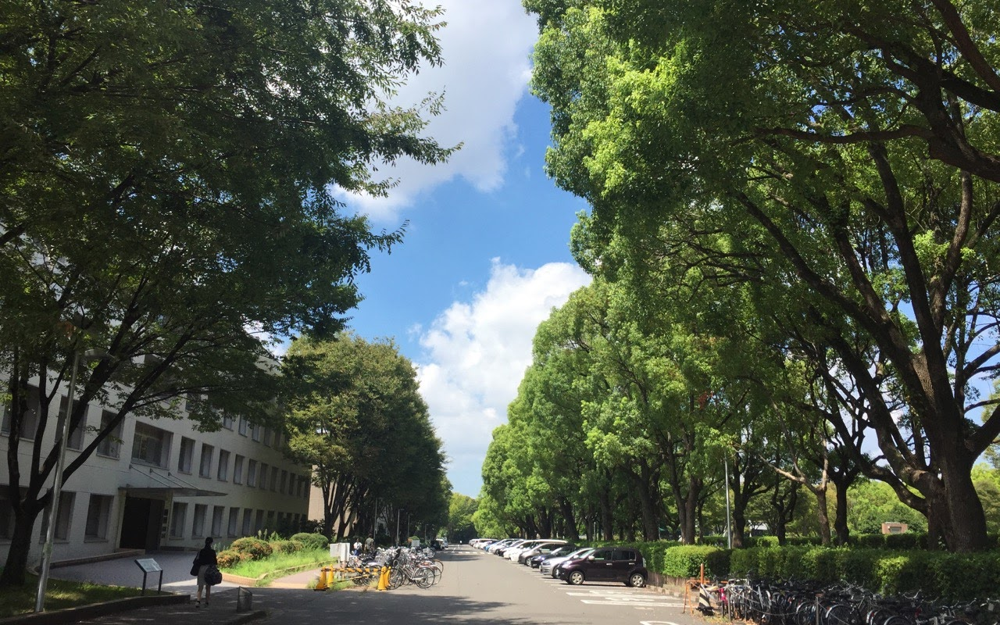
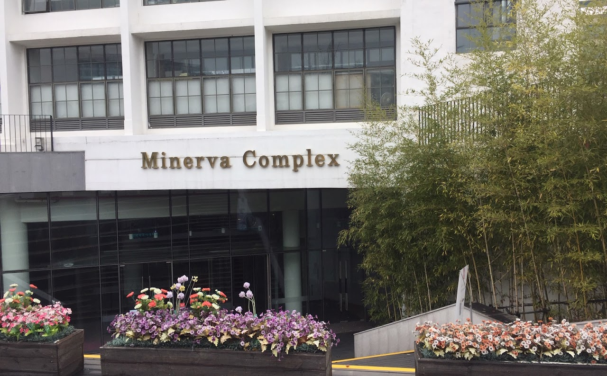
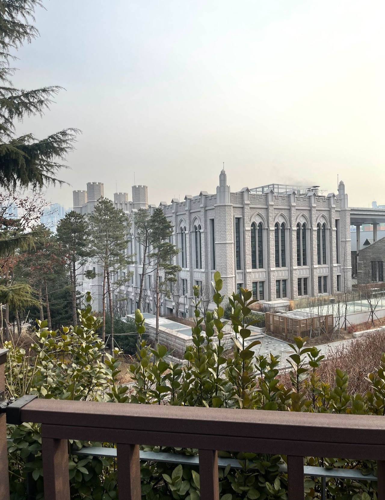

Presentations
Talks & Workshops
Talks, conference presentations, colloquia, and workshops.
Talks & Workshops
- "Gender classification of Korean names: Deep neural networks and LLMs in comparison with human judgments"
- "From Praat to R: A Hands-on Guide to Phonetic Data Analysis"
- "Comparing LLMs and Humans in the Gender Classification of Korean Names"
- "AI 디지털 활용 영어교육을 위한 교원교육: 예비교원의 AI디지털 활용 수업 모델 개발 사례를 중심으로"
- "AI디지털도구 영어교육 수업자료 개발 사례 (AI digital tools in English education: a case study in material development)"
- "ChatGPT takes on a phonology exam: Analyzing its characteristics, errors, and reasoning ability"
- "Gender Classification of Korean Personal Names Using Deep Neural Network: Comparing with the Maximum Entropy Model"
- "Phonotactic modeling and classification using maximum entropy and deep neural networks"
- "Linear and logistic mixed-effects regression using R"
- "The phonetic specification of contour tones: evidence from the Mandarin rising tone (Flemming and Cho 2017)"
- "Introduction to statistics using R"
- "Basics of mixed effects models using R"
- "Perceptibility of vowel duration contrasts and dispersion in the English Lexicon"
Photos
-

Nagoya University, August 2018
-

Hankook University of Foreign Studies, January 2020
-

2023 Computational Linguisitcs Winter School; Korea University